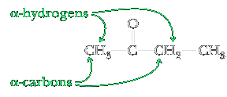
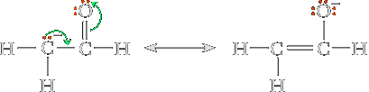

Keto-Enol Tautomerism
A carbon atom adjacent to a carbonyl group is called an α-carbon, and hydrogen atoms bonded to it are called α-hydrogens.
Because carbon and hydrogen have comparable electronegativities, a C−H bond normally has little polarity. In addition, carbon does not have a high electronegativity (compare it, for example, with oxygen, which has an electronegativity of 3.5), so that an anion based on carbon is relatively unstable. As a result, a hydrogen bonded to carbon usually shows very low acidity. The situation is different, however, for hydrogens alpha to a carbonyl group. α-Hydrogens are more acidic than acetylenic, vinylic, and alkane hydrogens but less acidic than −OH hydrogens of alcohols (Table 16.5). The greater acidity of α-hydrogens arises because the negative charge on the resulting enolate anion is delocalized by resonance, thus stabilizing it relative to an alkane, alkene, or alkyne anion.
An enolate anion is also stabilized by the electron-withdrawing inductive effect of the electronegative oxygen. Recall that we used these same factors in Section 4.6C to explain the greater acidity of carboxylic acids compared with alcohols.
When an enolate anion reacts with a proton donor, it may do so either on oxygen or on the α-carbon. Protonation of the enolate anion on the α-carbon gives the original molecule in what is called the keto form. Protonation on oxygen gives an enol form. In this way, the keto form of an aldehyde or ketone can be converted into the enol catalyzed by base.
Enolate anion −An anion derived by loss of a hydrogen from a carbon alpha to a carbonyl group; the anion of an enol.
Tautomers − Isomers that differ in the position of a proton. Tautomers are a special type of structural isomer.
Base-Catalyzed Equilibration of Keto and Enol Tautomers
Step 1: Take a proton away. A base, B− , removes an α-hydrogen to give an enolate anion intermediate that is stabilized by resonance delocalization of the negative charge.
Step 2: Add a proton. A proton is added to the enolate oxygen anion to give the enol.
Enol formation can also be catalyzed by acid. The only difference between the base-catalyzed and acid-catalyzed reactions is the order of proton addition and elimination. In acid-catalyzed reactions, a proton is added first; in base-catalyzed reactions, a proton is removed first.